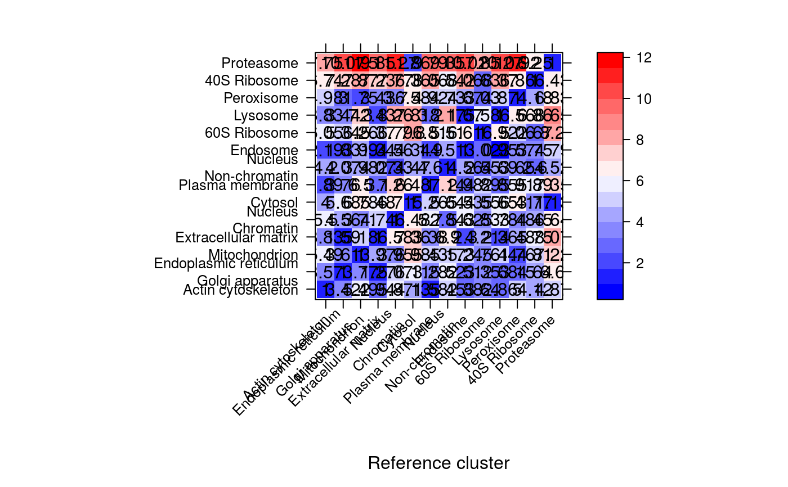
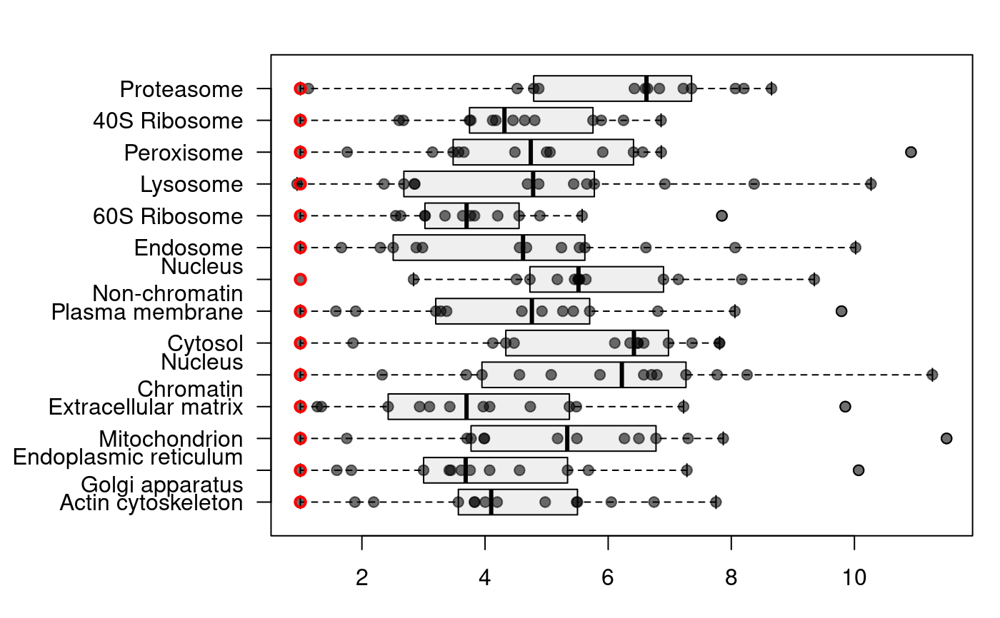

QSep-class.RdThe QSep infrastructure provide a way to quantify the
resolution of a spatial proteomics experiment, i.e. to quantify how
well annotated sub-cellular clusters are separated from each other.
The QSep function calculates all between and within cluster
average distances. These distances are then divided column-wise by the
respective within cluster average distance. For example, for a dataset
with only 2 spatial clusters, we would obtain
| \(c_1\) | \(c_2\) | |
| \(c_1\) | \(d_11\) | \(d_12\) |
| \(c_2\) | \(d_21\) | \(d_22\) |
Normalised distance represent the ratio of between to within average distances, i.e. how much bigger the average distance between cluster \(c_i\) and \(c_j\) is compared to the average distance within cluster \(c_i\).
| \(c_1\) | \(c_2\) | |
| \(c_1\) | 1 | \(\frac{d_12}{d_22}\) |
| \(c_2\) | \(\frac{d_21}{d_11}\) | 1 |
Note that the normalised distance matrix is not symmetric anymore and the normalised distance ratios are proportional to the tightness of the reference cluster (along the columns).
Objects can be created by calls using the constructor
QSep (see below).
x:Object of class "matrix" containing the
pairwise distance matrix, accessible with qseq(., norm =
FALSE).
xnorm:Object of class "matrix" containing the
normalised pairwise distance matrix, accessible with qsep(.,
norm = TRUE) or qsep(.).
object:Object of class "character" with the
variable name of MSnSet object that was used
to generate the QSep object.
.__classVersion__:Object of class "Versions"
storing the class version of the object.
Class "Versioned", directly.
signature(object = "MSnSet", fcol = "character"):
constructor for QSep objects. The fcol argument
defines the name of the feature variable that annotates the
sub-cellular clusters. Non-marker proteins, that are marked as
"unknown" are automatically removed prior to distance
calculation.
signature{object = "QSep", norm = "logical"}:
accessor for the normalised (when norm is TRUE,
which is default) and raw (when norm is FALSE)
pairwise distance matrices.
signature{object = "QSep"}: method to retrieve
the names of the sub-celluar clusters originally defined in
QSep's fcol argument. A replacement method
names(.) <- is also available.
signature(object = "QSep", ..., verbose =
"logical"): Invisible return all between cluster average
distances and prints (when verbose is TRUE,
default) a summary of those.
signature(object = "QSep", norm = "logical",
...): plots an annotated heatmap of all normalised pairwise
distances. norm (default is TRUE) defines whether
normalised distances should be plotted. Additional arguments
... are passed to the levelplot.
signature(object = "QSep", norm = "logical"...):
produces a boxplot of all normalised pairwise distances. The red
points represent the within average distance and black points
between average distances. norm (default is TRUE)
defines whether normalised distances should be plotted.
## Test data from Christoforou et al. 2016 library("pRolocdata") data(hyperLOPIT2015) ## Create the object and get a summary hlq <- QSep(hyperLOPIT2015) hlq#> Object of class 'QSep'. #> Data: hyperLOPIT2015 #> With 14 sub-cellular clusters.summary(hlq)#> Min. 1st Qu. Median Mean 3rd Qu. Max. #> 0.9458 3.6189 4.9075 5.1172 6.5779 11.4970## mean distance matrix qsep(hlq, norm = FALSE)#> Actin cytoskeleton #> Actin cytoskeleton 0.1372312 #> Endoplasmic reticulum/Golgi apparatus 0.4690770 #> Mitochondrion 0.7536736 #> Extracellular matrix 0.4030989 #> Nucleus - Chromatin 0.8050828 #> Cytosol 0.5661409 #> Plasma membrane 0.2164849 #> Nucleus - Non-chromatin 0.7485378 #> Endosome 0.3955070 #> 60S Ribosome 0.4991471 #> Lysosome 0.3924089 #> Peroxisome 0.6861757 #> 40S Ribosome 0.5657759 #> Proteasome 0.6686545 #> Endoplasmic reticulum/Golgi apparatus #> Actin cytoskeleton 0.4690770 #> Endoplasmic reticulum/Golgi apparatus 0.1315295 #> Mitochondrion 0.4961792 #> Extracellular matrix 0.1676919 #> Nucleus - Chromatin 0.6674186 #> Cytosol 0.8032906 #> Plasma membrane 0.4314796 #> Nucleus - Non-chromatin 0.7266946 #> Endosome 0.3298215 #> 60S Ribosome 0.4405743 #> Lysosome 0.3526493 #> Peroxisome 0.4138766 #> 40S Ribosome 0.6106558 #> Proteasome 0.8685051 #> Mitochondrion Extracellular matrix #> Actin cytoskeleton 0.7536736 0.4030989 #> Endoplasmic reticulum/Golgi apparatus 0.4961792 0.1676919 #> Mitochondrion 0.1373421 0.5455040 #> Extracellular matrix 0.5455040 0.1053434 #> Nucleus - Chromatin 0.5424170 0.6929457 #> Cytosol 0.9585277 0.7755911 #> Plasma membrane 0.7462545 0.3556568 #> Nucleus - Non-chromatin 0.7106804 0.7267853 #> Endosome 0.7198622 0.2420721 #> 60S Ribosome 0.5168101 0.4430401 #> Lysosome 0.7471831 0.2483814 #> Peroxisome 0.2418018 0.4724549 #> 40S Ribosome 0.6601247 0.6060881 #> Proteasome 0.9917128 0.8497961 #> Nucleus - Chromatin Cytosol #> Actin cytoskeleton 0.8050828 0.5661409 #> Endoplasmic reticulum/Golgi apparatus 0.6674186 0.8032906 #> Mitochondrion 0.5424170 0.9585277 #> Extracellular matrix 0.6929457 0.7755911 #> Nucleus - Chromatin 0.1463443 0.9484646 #> Cytosol 0.9484646 0.1414339 #> Plasma membrane 0.8341281 0.7443767 #> Nucleus - Non-chromatin 0.4154339 0.7974210 #> Endosome 0.8226749 0.7826439 #> 60S Ribosome 0.5602938 0.6438972 #> Lysosome 0.8451732 0.7995801 #> Peroxisome 0.5094584 0.9068309 #> 40S Ribosome 0.6518274 0.5331764 #> Proteasome 0.9718751 0.1600117 #> Plasma membrane Nucleus - Non-chromatin #> Actin cytoskeleton 0.2164849 0.7485378 #> Endoplasmic reticulum/Golgi apparatus 0.4314796 0.7266946 #> Mitochondrion 0.7462545 0.7106804 #> Extracellular matrix 0.3556568 0.7267853 #> Nucleus - Chromatin 0.8341281 0.4154339 #> Cytosol 0.7443767 0.7974210 #> Plasma membrane 0.1148277 0.8199944 #> Nucleus - Non-chromatin 0.8199944 0.1783578 #> Endosome 0.3425939 0.8135370 #> 60S Ribosome 0.5616175 0.4546378 #> Lysosome 0.3274954 0.8365127 #> Peroxisome 0.6788467 0.6518952 #> 40S Ribosome 0.6760487 0.4643483 #> Proteasome 0.8444952 0.8064265 #> Endosome 60S Ribosome Lysosome #> Actin cytoskeleton 0.3955070 0.49914711 0.3924089 #> Endoplasmic reticulum/Golgi apparatus 0.3298215 0.44057429 0.3526493 #> Mitochondrion 0.7198622 0.51681006 0.7471831 #> Extracellular matrix 0.2420721 0.44304012 0.2483814 #> Nucleus - Chromatin 0.8226749 0.56029383 0.8451732 #> Cytosol 0.7826439 0.64389721 0.7995801 #> Plasma membrane 0.3425939 0.56161748 0.3274954 #> Nucleus - Non-chromatin 0.8135370 0.45463783 0.8365127 #> Endosome 0.1804409 0.54561425 0.1706577 #> 60S Ribosome 0.5456143 0.08250087 0.5709784 #> Lysosome 0.1706577 0.57097838 0.1023701 #> Peroxisome 0.6442550 0.41710740 0.6716427 #> 40S Ribosome 0.6762709 0.22048766 0.7022256 #> Proteasome 0.8642925 0.67687443 0.8858795 #> Peroxisome 40S Ribosome Proteasome #> Actin cytoskeleton 0.6861757 0.56577585 0.66865454 #> Endoplasmic reticulum/Golgi apparatus 0.4138766 0.61065583 0.86850511 #> Mitochondrion 0.2418018 0.66012471 0.99171284 #> Extracellular matrix 0.4724549 0.60608808 0.84979611 #> Nucleus - Chromatin 0.5094584 0.65182738 0.97187508 #> Cytosol 0.9068309 0.53317641 0.16001172 #> Plasma membrane 0.6788467 0.67604868 0.84449520 #> Nucleus - Non-chromatin 0.6518952 0.46434826 0.80642652 #> Endosome 0.6442550 0.67627087 0.86429254 #> 60S Ribosome 0.4171074 0.22048766 0.67687443 #> Lysosome 0.6716427 0.70222557 0.88587953 #> Peroxisome 0.1378630 0.57564364 0.94187426 #> 40S Ribosome 0.5756436 0.08388726 0.53905744 #> Proteasome 0.9418743 0.53905744 0.08625819## normalised average distance matrix qsep(hlq)#> Actin cytoskeleton #> Actin cytoskeleton 1.000000 #> Endoplasmic reticulum/Golgi apparatus 3.566325 #> Mitochondrion 5.487565 #> Extracellular matrix 3.826523 #> Nucleus - Chromatin 5.501293 #> Cytosol 4.002866 #> Plasma membrane 1.885302 #> Nucleus - Non-chromatin 4.196833 #> Endosome 2.191892 #> 60S Ribosome 6.050204 #> Lysosome 3.833237 #> Peroxisome 4.977229 #> 40S Ribosome 6.744479 #> Proteasome 7.751780 #> Endoplasmic reticulum/Golgi apparatus #> Actin cytoskeleton 3.418152 #> Endoplasmic reticulum/Golgi apparatus 1.000000 #> Mitochondrion 3.612725 #> Extracellular matrix 1.591860 #> Nucleus - Chromatin 4.560606 #> Cytosol 5.679619 #> Plasma membrane 3.757626 #> Nucleus - Non-chromatin 4.074365 #> Endosome 1.827864 #> 60S Ribosome 5.340238 #> Lysosome 3.444845 #> Peroxisome 3.002086 #> 40S Ribosome 7.279483 #> Proteasome 10.068668 #> Mitochondrion Extracellular matrix #> Actin cytoskeleton 5.492000 2.937371 #> Endoplasmic reticulum/Golgi apparatus 3.772380 1.274937 #> Mitochondrion 1.000000 3.971864 #> Extracellular matrix 5.178342 1.000000 #> Nucleus - Chromatin 3.706445 4.735038 #> Cytosol 6.777214 5.483772 #> Plasma membrane 6.498905 3.097308 #> Nucleus - Non-chromatin 3.984578 4.074873 #> Endosome 3.989463 1.341559 #> 60S Ribosome 6.264298 5.370126 #> Lysosome 7.298839 2.426307 #> Peroxisome 1.753928 3.426989 #> 40S Ribosome 7.869189 7.225032 #> Proteasome 11.497028 9.851773 #> Nucleus - Chromatin Cytosol #> Actin cytoskeleton 5.866617 4.125454 #> Endoplasmic reticulum/Golgi apparatus 5.074288 6.107304 #> Mitochondrion 3.949387 6.979127 #> Extracellular matrix 6.577972 7.362505 #> Nucleus - Chromatin 1.000000 6.481050 #> Cytosol 6.706063 1.000000 #> Plasma membrane 7.264170 6.482553 #> Nucleus - Non-chromatin 2.329217 4.470907 #> Endosome 4.559249 4.337398 #> 60S Ribosome 6.791368 7.804732 #> Lysosome 8.256053 7.810677 #> Peroxisome 3.695397 6.577769 #> 40S Ribosome 7.770279 6.355869 #> Proteasome 11.267046 1.855032 #> Plasma membrane Nucleus - Non-chromatin #> Actin cytoskeleton 1.577520 5.454575 #> Endoplasmic reticulum/Golgi apparatus 3.280478 5.524955 #> Mitochondrion 5.433546 5.174528 #> Extracellular matrix 3.376167 6.899202 #> Nucleus - Chromatin 5.699765 2.838743 #> Cytosol 5.263072 5.638118 #> Plasma membrane 1.000000 7.141084 #> Nucleus - Non-chromatin 4.597470 1.000000 #> Endosome 1.898649 4.508607 #> 60S Ribosome 6.807412 5.510703 #> Lysosome 3.199131 8.171452 #> Peroxisome 4.924068 4.728573 #> 40S Ribosome 8.059015 5.535385 #> Proteasome 9.790319 9.348985 #> Endosome 60S Ribosome Lysosome #> Actin cytoskeleton 2.882049 3.637272 2.859474 #> Endoplasmic reticulum/Golgi apparatus 2.507586 3.349623 2.681142 #> Mitochondrion 5.241381 3.762940 5.440307 #> Extracellular matrix 2.297934 4.205676 2.357826 #> Nucleus - Chromatin 5.621503 3.828601 5.775239 #> Cytosol 5.533638 4.552637 5.653384 #> Plasma membrane 2.983548 4.890957 2.852059 #> Nucleus - Non-chromatin 4.561265 2.549022 4.690083 #> Endosome 1.000000 3.023784 0.945782 #> 60S Ribosome 6.613436 1.000000 6.920877 #> Lysosome 1.667066 5.577587 1.000000 #> Peroxisome 4.673155 3.025521 4.871813 #> 40S Ribosome 8.061664 2.628381 8.371064 #> Proteasome 10.019831 7.847074 10.270091 #> Peroxisome 40S Ribosome Proteasome #> Actin cytoskeleton 5.000144 4.122794 4.872468 #> Endoplasmic reticulum/Golgi apparatus 3.146645 4.642729 6.603120 #> Mitochondrion 1.760581 4.806427 7.220750 #> Extracellular matrix 4.484904 5.753452 8.066916 #> Nucleus - Chromatin 3.481232 4.454068 6.641018 #> Cytosol 6.411695 3.769793 1.131353 #> Plasma membrane 5.911872 5.887504 7.354454 #> Nucleus - Non-chromatin 3.654986 2.603465 4.521399 #> Endosome 3.570449 3.747880 4.789893 #> 60S Ribosome 5.055794 2.672549 8.204452 #> Lysosome 6.560924 6.859672 8.653691 #> Peroxisome 1.000000 4.175476 6.831959 #> 40S Ribosome 6.862111 1.000000 6.425975 #> Proteasome 10.919244 6.249348 1.000000## Update the organelle cluster names for better ## rendering on the plots names(hlq) <- sub("/", "\n", names(hlq)) names(hlq) <- sub(" - ", "\n", names(hlq)) names(hlq)#> [1] "Actin cytoskeleton" #> [2] "Endoplasmic reticulum\nGolgi apparatus" #> [3] "Mitochondrion" #> [4] "Extracellular matrix" #> [5] "Nucleus\nChromatin" #> [6] "Cytosol" #> [7] "Plasma membrane" #> [8] "Nucleus\nNon-chromatin" #> [9] "Endosome" #> [10] "60S Ribosome" #> [11] "Lysosome" #> [12] "Peroxisome" #> [13] "40S Ribosome" #> [14] "Proteasome"## Boxplot of the normalised intensities par(mar = c(3, 10, 2, 1)) plot(hlq)## Boxplot of all between cluster average distances x <- summary(hlq, verbose = FALSE) boxplot(x)